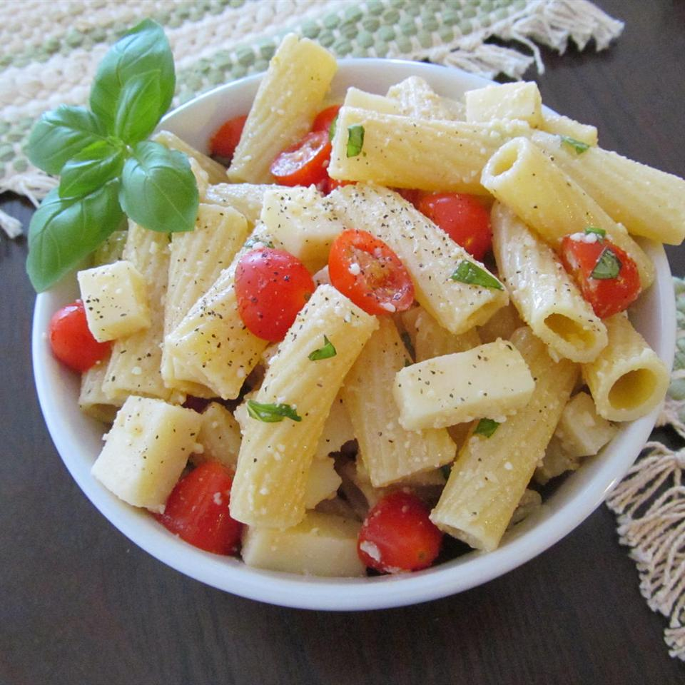

Caprese Pasta Salad
The dynamic trio of fresh basil pesto, mozzarella cheese, and juicy tomato are reunited once again in an American favorite- pasta salad. This light and fresh salad is great for a lunch, a side dish, or even a snack.
Ingredients
- 1 (16 ounce) package fusilli pasta
- 1 cup fresh basil leaves
- ¼ cup grated Parmesan or Romano cheese
- ¼ cup pine nuts, toasted (Optional)
- 2 cloves garlic
- ¼ cup olive oil
- 1 pint cherry tomatoes, halved
- 3 tablespoons grated Parmesan cheese
- 4 ounces fresh mozzarella cheese, cut into strips
- salt and pepper to taste
Steps
- Fill a large pot with lightly salted water and bring to a rolling boil over high heat. Once the water is boiling, stir in the fusilli, and return to a boil. Cook the pasta uncovered, stirring occasionally, until the pasta has cooked through, but is still firm to the bite, about 12 minutes. Drain.
- Place basil, 1/4 cup Parmesan cheese, pine nuts, and garlic into a blender or food processor; cover and chop to a coarse paste. Add the olive oil in a slow, steady stream. Continue processing until a soft paste has formed. Set pesto aside.
- Combine the cooked pasta, tomatoes, 3 tablespoons Parmesan, mozzarella, and pesto in a large bowl. Season with salt and pepper. Cover bowl, refrigerate to chill for 45 minutes, and serve.